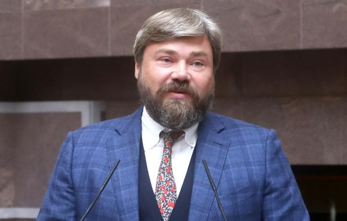

Банкир. Православный активист. Архитектор Царьграда.

«Православный олигарх» — финансист сепаратизма и создатель идеологического ТВ.
Родился в научном городке Пущино Московской области. Отец — учёный. Окончил юридический факультет МГУ. Быстро нашёл место в постсоветском финансовом мире.
Основал частный инвестиционный фонд Marshall Capital Partners. Работал с крупными телекоммуникационными компаниями — в частности, с «Ростелекомом». Стал богатым человеком стандартным для 2000-х путём.
Основал благотворительный фонд имени Василия Великого — официально для поддержки православного образования. Фактически — центр продвижения «православной цивилизации» как альтернативы западному либерализму.
Запускает телеканал Царьград — православный консервативный вещатель. Одновременно финансирует сепаратистские структуры в Донбассе. Его имя связывают с вербовкой добровольцев и поставками снаряжения отрядам Гиркина.
Брюссель и Вашингтон вводят персональные санкции — за финансирование дестабилизации востока Украины. Первый крупный православный консерватор, попавший под западные ограничения. Активы заморожены.
Царьград ТВ становится одним из главных рупоров «Русского мира» и оправдания войны с позиций православного национализма. Малофеев — частый гость государственных ток-шоу.
Малофеев — редкий тип: идеологический предприниматель. Интерпр. Он создаёт инфраструктуру: телеканал, фонды, связи с церковью и силовыми структурами. Царьград ТВ заполняет нишу аудитории, которую не охватывают Соловьёв и Киселёв — глубоко религиозных консерваторов, для которых война — не политическая, а духовная необходимость.
Под санкциями ЕС и США с 2014 года — за финансирование и организационную поддержку сепаратистских формирований на востоке УкраиныФакт. Великобритания и Канада присоединились позже. Европейские активы заморожены.
Все утверждения в данном досье основаны на открытых публичных источниках. Факты, отмеченные Факт, имеют прямые первичные источники. Отмеченные Интерпр. — авторская интерпретация задокументированных событий.